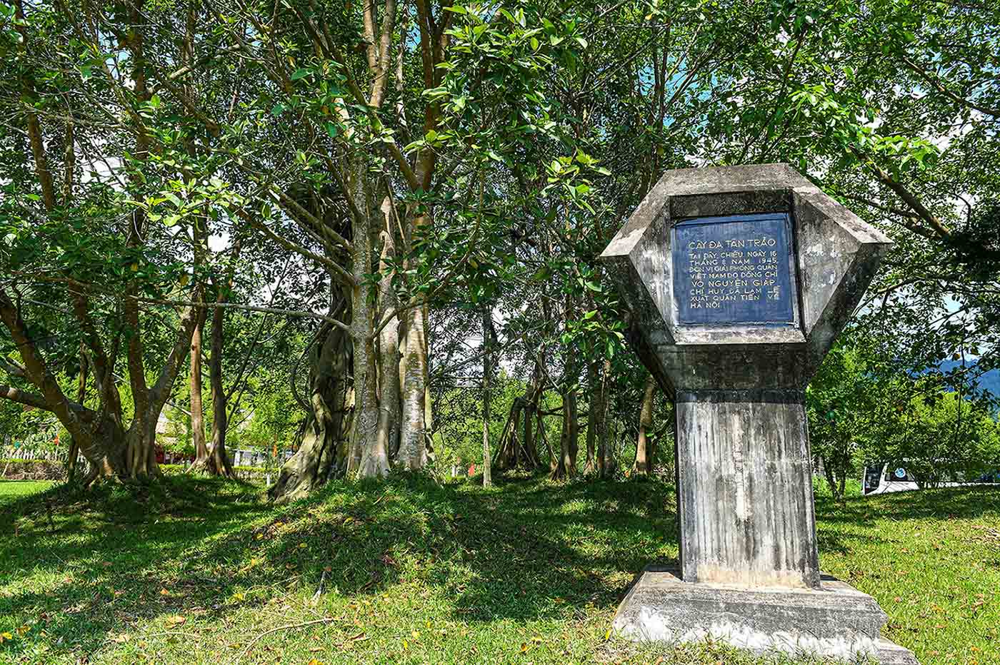
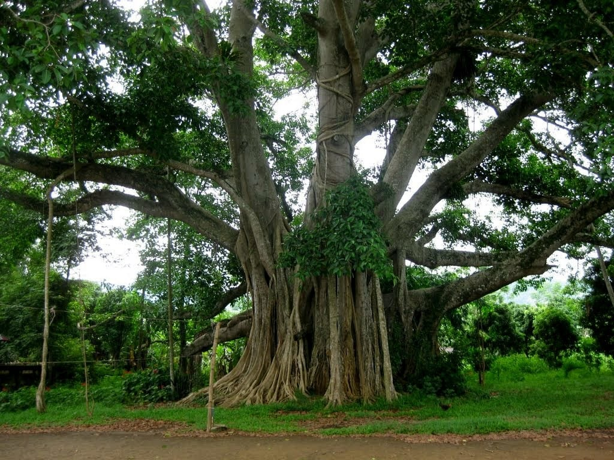
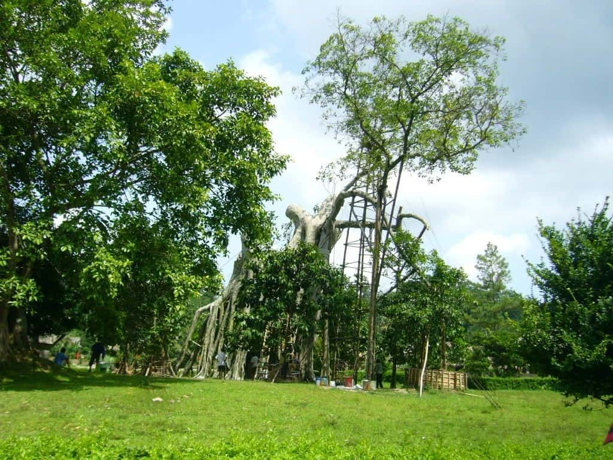

Nằm trong quần thể di tích lịch sử Tân Trào, cây đa Tân Trào nằm ở đầu làng Kim Long, nay là thôn Tân Lập, xã Tân Trào (Sơn Dương) đã chứng kiến biết bao thăng trầm của lịch sử. Với tuổi đời khoảng 300 năm, cây đa cổ thụ đã in sâu vào ký ức của biết bao thế hệ người dân Tân Trào,đồng thời thời trở thành địa điểm du lịch Tuyên Quang thu hút nhiều du khách.

Cây đa Tân Trào là di tích lịch sử nổi tiếng tại Tuyên Quang
Cây đa Tân Trào gồm hai cây là cây đa ông và cây đa bà mọc cách nhau khoảng 10m. Tuy nhiên, trải qua thời gian và tác động của thời tiết, cây đa ông đã bị bão tàn phá, chỉ còn lại một nhánh nhỏ. Cây đa bà lá cũng dần ngả vàng và nhiều ngọn đã chết. Đến năm 2008, chỉ còn duy nhất một cành hướng Đông Bắc của cây đa bà sống sót, nhưng tình trạng phát triển kém, phần rễ chính đã gần như chết. Trước tình hình này, UBND tỉnh đã đề ra kế hoạch chăm sóc và phục hồi cây đa Tân Trào, cùng với việc trồng nhiều cây con xung quanh để bảo tồn quần thể này.

Cây đa nằm ở đầu làng Kim Long, nay là thôn Tân Lập, xã Tân Trào
Cây đa Tân Trào Tuyên Quang được xem là chứng nhân lịch sử của dân tộc, đã ghi dấu một mốc son chói lọi. Chính dưới bóng cây đa cổ thụ này, vào chiều ngày 16 tháng 8 năm 1945, Quân đội nhân dân Việt Nam đã làm lễ xuất quân hào hùng, đánh dấu bước ngoặt quan trọng trong cuộc kháng chiến giải phóng dân tộc. Trước sự chứng kiến của đông đảo đại biểu toàn quốc và nhân dân địa phương, Đại tướng Võ Nguyên Giáp đã đọc bản Quân lệnh số 1, thúc giục quân đội tiến về giải phóng Thủ đô Hà Nội.
Cây đa Tân Trào là biểu tượng của Thủ đô kháng chiến, Thủ đô Khu giải phóng và là niềm tự hào của người dân Tuyên Quang nói riêng và cả nước nói chung. Hình ảnh cây đa cổ thụ không chỉ khắc sâu trong tâm trí mỗi người dân Việt Nam mà còn được các nghệ sĩ đưa vào thơ ca, nhạc họa, trở thành nguồn cảm hứng bất tận.

Cây đa là chứng nhân lịch sử, ghi dấu nhiều sự kiện trọng đại

Đình Hồng Thái
|

Lán Nà Nưa
|

Lán Hang Bòng
|

Flaminggo Tân Trào
|

Cây đa Tân Trào
|

Đình Tân Trào
|
© 2021 Khu di tích lịch sử Tân Trào
Địa chỉ: Tân Trào, Sơn Dương, Tuyên Quang
Điện thoại:liên hệ group 4